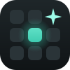

Miracle DeckAbrí programas y juegos, controlá la música, el volumen, OBS y mucho más con un toque. Una botonera de streaming, pero con el Android que ya tenés.
El programa es para Windows: instalalo en la PC y después conectá este celular. Escribí esta dirección en el navegador de la PC:
Gratis · Windows 10 u 11 · no pide permisos de administrador
Programas, juegos de Steam, carpetas y páginas web. Si ya están abiertos, los trae al frente.
Play, pausa y temas; volumen, micrófono, salida de audio y un soundboard.
Escenas, grabar, transmitir y silenciar fuentes, con el estado en vivo.
Combinaciones de teclas, textos y macros que podés grabar desde el teclado.
Usá la tablet como mouse y pasá textos entre el celular y la PC.
Páginas, carpetas, colores, íconos y grupos. Se configura cómodo desde la PC.
Baila con tu música, se duerme de noche, festeja tus logros y se gana accesorios mientras usás la botonera.
Miri en una esquina del stream (fuente de navegador en OBS), visualizador de música, contadores y clips de Twitch.
Mirá qué está haciendo la IA y permití o rechazá sus pedidos desde la tablet, deslizando.
Claude o Codex arman tu botonera por vos: botones con sus íconos, páginas enteras y escenas de OBS. Antes de cambiar algo, te muestra la lista y vos aceptás. (Pro)
«Armame una página para stream con OBS, mi micrófono, Spotify y Discord.»
Es gratis. Queda en la bandeja, junto al reloj.
En la tablet o el celular, en el mismo Wi-Fi que la PC.
La app encuentra la PC sola, o escaneá el código QR del programa. Sin escribir IP ni claves.